GEOSPATIAL ENGINEERING
& WEBGIS DEVELOPMENT
Halo, Saya Herfiadi Reski Alviansyah, Dan saya seorang .
Saya seorang Sarjana Geofisika (S.Si) dengan minat kuat di bidang Geoinformatika, pengembangan WebGIS, dan integrasi Artificial Intelligence. Saya berdedikasi membangun solusi data spasial yang efisien.
◉ DATASET_01: PROFIL
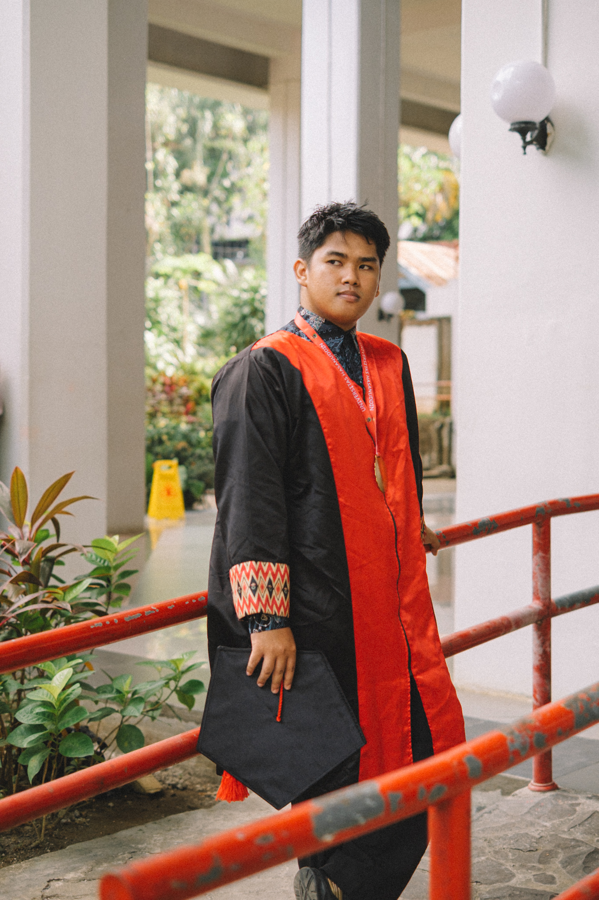
Saya memiliki pengalaman dalam merancang dan mengembangkan platform WebGIS yang dilengkapi chatbot berbasis AI untuk berbagai kebutuhan. Saya mahir menggunakan teknologi GIS modern untuk pemrosesan dan presentasi data spasial. Sebagai lulusan Geofisika (S.Si) dari Universitas Hasanuddin dengan GPA 3.81, komitmen saya adalah terus mengembangkan solusi inovatif yang menggabungkan GIS dan Kecerdasan Buatan.
PENDIDIKAN
Geofisika
Universitas Hasanuddin
DOMISILI
Makassar, Indonesia
Waktu Indonesia Tengah
◉ LEGEND: KEAHLIAN
WebGIS & Data Spasial
- Perangkat Lunak GIS: ArcMap/ArcGIS, QGIS
- Pengembangan WebGIS (Flask, Leaflet, Folium)
- Analisis Spasial: Overlay, Buffer, Interpolasi, Analisis Raster, Terrain Analysis, Suitability Analysis
- Geospatial Machine Learning untuk Pemodelan Kesesuaian Lahan
Perangkat Lunak & AI
- Pemrograman Python untuk GIS (GeoPandas, Rasterio, GDAL, PyGMT)
- Integrasi Chatbot AI (RAG, n8n, Supabase)
- Manajemen Database (PostgreSQL/PostGIS, MySQL)
- Pengembangan UI/UX untuk Aplikasi GIS
Bahasa
- Bahasa Indonesia — Penutur Asli (Native)
- Bahasa Inggris — Upper-Intermediate (CEFR, EF SET)
◉ TIMELINE: PENGALAMAN
2025
Junior Web Developer
PT Geocode Smart Solution
• Mengembangkan platform WebGIS: GeoAI Barru, Geopangansidrap, dan Sijagung.
• Menerapkan fitur chatbot AI via n8n dan Supabase untuk interaktivitas pengguna.
• Manajemen data spasial dengan PostgreSQL/PostGIS dan MySQL.
• Meningkatkan UI/UX aplikasi GIS menggunakan Leaflet dan Folium.
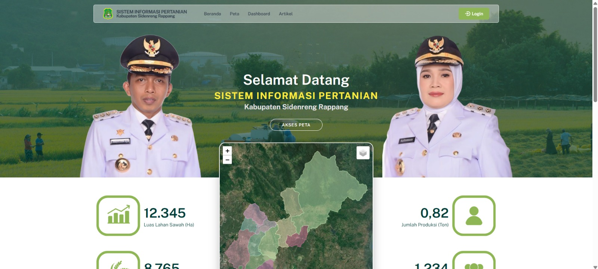
IMG_01: GEOAI_DEV
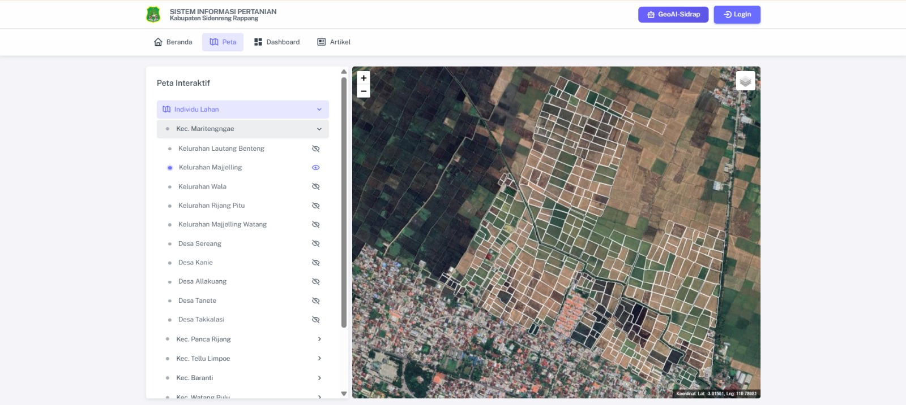
IMG_02: UI_INTERFACE
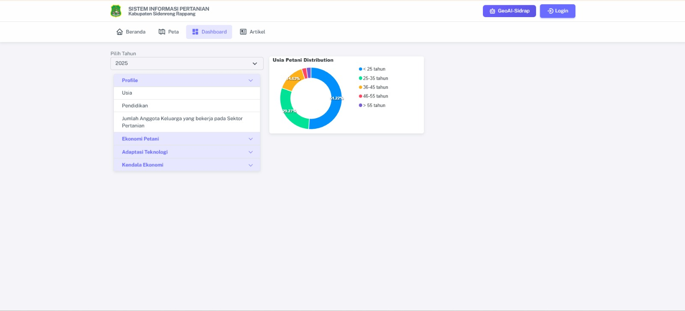
IMG_03: BACKEND_AI
2025
GIS Transmission Planning Intern
UPT PLN Makassar
• Membuat peta distribusi spasial Saluran Udara Tegangan Tinggi (SUTT) di Kota Makassar.
• Membuat peta kerentanan tanah longsor untuk tiap lokasi SUTT.
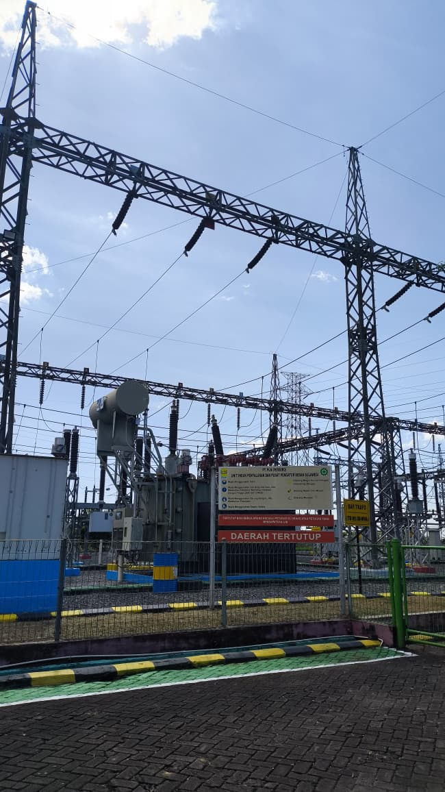
IMG_01: SUTT_DISTRIBUTION
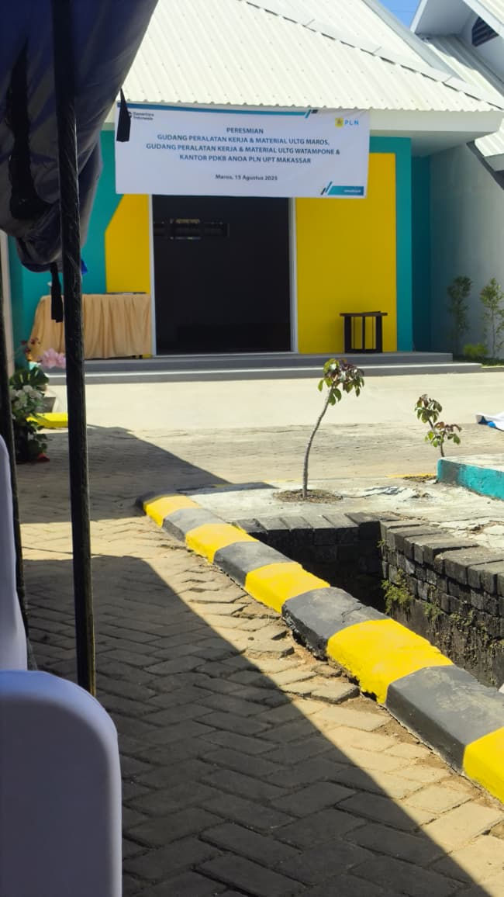
IMG_02: SLIDE_SUSCEPTIBILITY
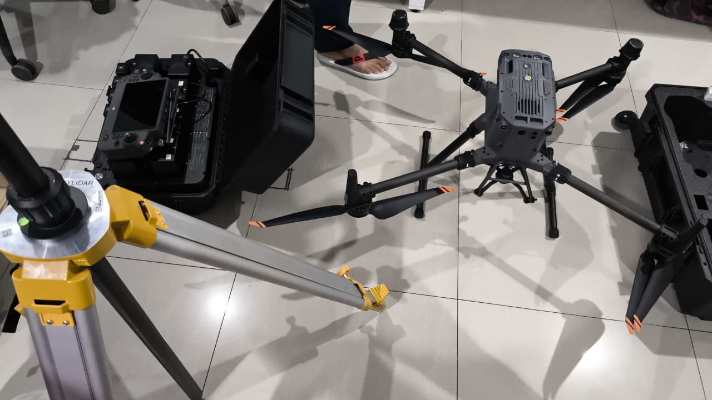
IMG_03: GIS_METADATA
2025
Surveyor Lapangan
Hasanuddin University – LPPM Witaris
• Melakukan survei lapangan untuk memetakan kelompok tani (POKTAN) menggunakan teknik pengumpulan data geospasial.
• Mengumpulkan dan memvalidasi data spasial dan atribut untuk setiap wilayah yang dipetakan.
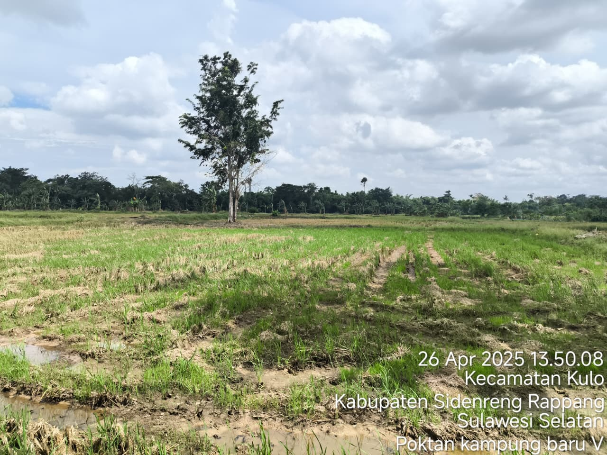
IMG_01: FARMER_MAPPING
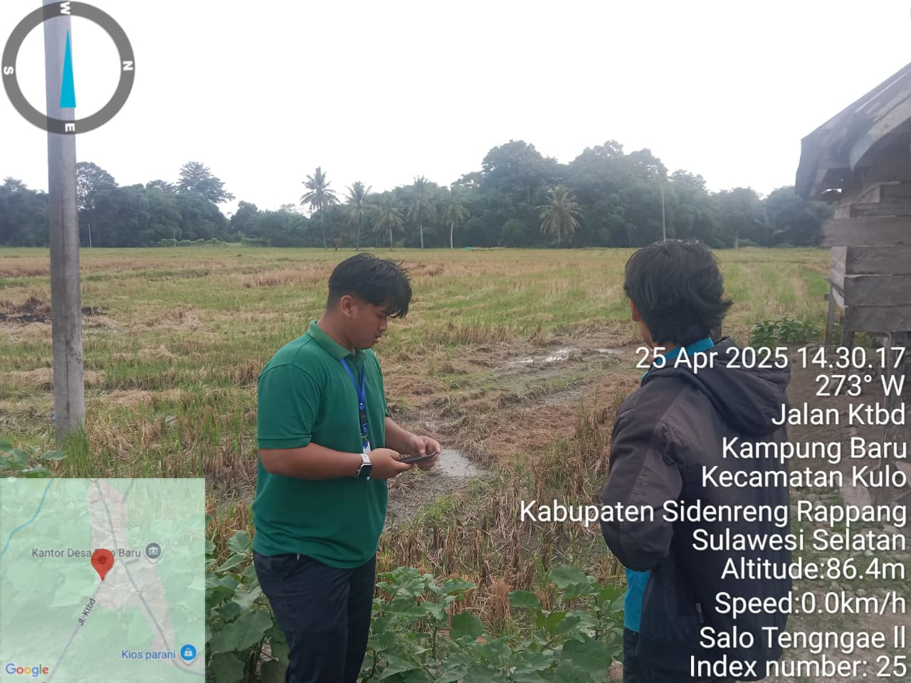
IMG_02: FIELD_VALIDATION
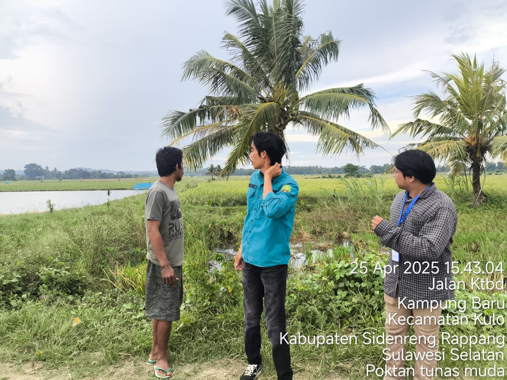
IMG_03: SURVEY_LOGS
2024
Data Entry Intern
Kedaireka MBKM, Kabupaten Barru
• Berkolaborasi dengan Pemerintah Kabupaten Barru dalam program Kedaireka MBKM untuk mengembangkan platform WebGIS analisis kesesuaian lahan pertanian.
• Membantu membangun sistem WebGIS interaktif untuk mendukung pemangku kepentingan lokal dalam efisiensi sumber daya pertanian dan pengambilan keputusan tata guna lahan.
• Berkontribusi dalam entry, organisasi, dan verifikasi data spasial dan atribut di dalam platform.
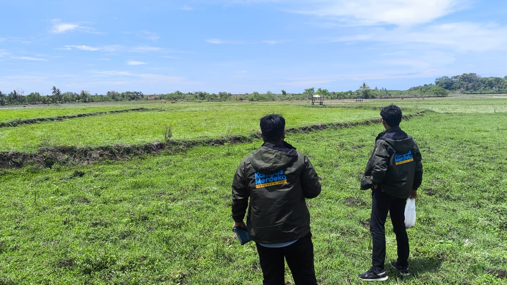
IMG_01: WEBGIS_COLLAB
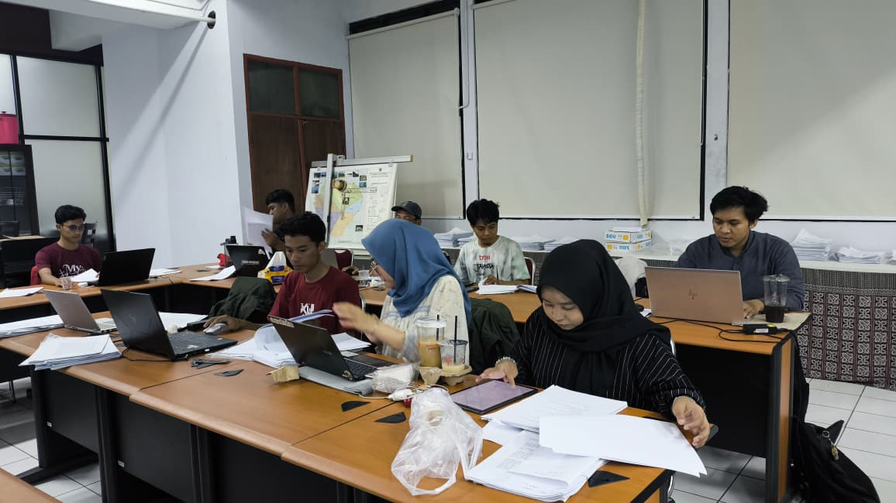
IMG_02: DATA_AUDIT
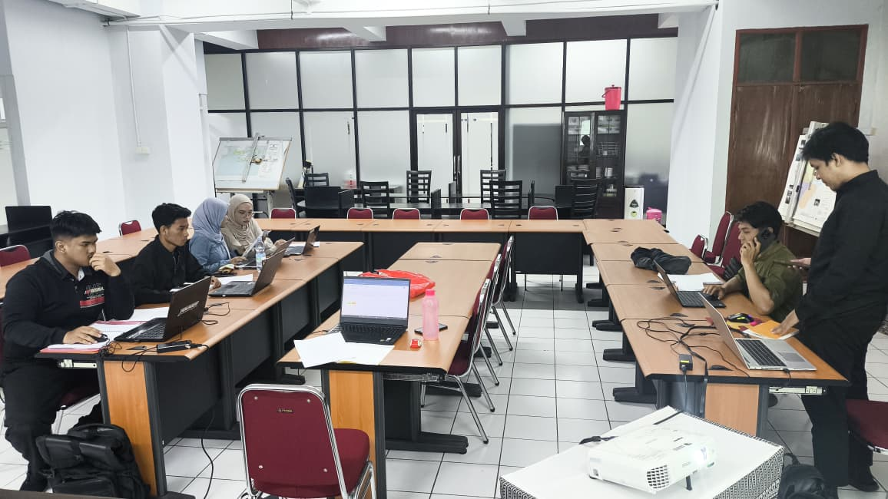
IMG_03: SUITABILITY_INDEX
◉ LAYERS: PROYEK TERBARU
Interactive Spatial Repositories

GeoAI Barru
Platform geospasial yang dilengkapi dengan lapisan analisis AI dan elemen peta interaktif.

Geopangansidrap
Platform WebGIS untuk pemetaan pertanian dan analisis ketahanan pangan.

Sijagung
WebGIS pertanian yang dirancang untuk melacak dan memonitor produksi jagung.

WebGIS Kab. Barru
WebGIS analisis kesesuaian lahan budidaya tanaman semangka di Kab. Barru, dilengkapi fitur AI Chatbot untuk analisis dan pemantauan lahan.
BengkelPro App
Aplikasi manajemen bengkel dengan peran Admin/Mekanik, sistem kasir (POS), dan manajemen inventaris.
AI GIS Chatbot
Integrasi API Groq, n8n, dan Supabase vector database untuk kueri data spasial yang cerdas.
Penghargaan & Prestasi
Gold Prize – ACRS 2025 (Asian Association on Remote Sensing)
"WebGIS-Based GeoAI Application for Agricultural Land Governance in Barru Regency, South Sulawesi, Indonesia"
Diberikan untuk proyek "WebGIS-Based GeoAI Application for Agricultural Land Governance in Barru Regency, South Sulawesi, Indonesia" yang dipresentasikan pada 44th Asian Conference on Remote Sensing (ACRS 2025).
Hubungi Saya!
Transmission established. Waiting for input.